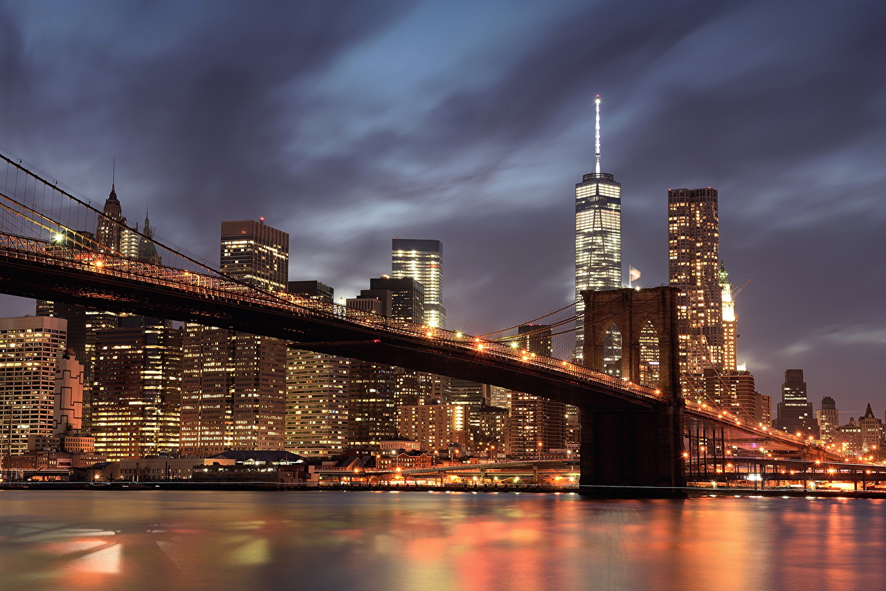
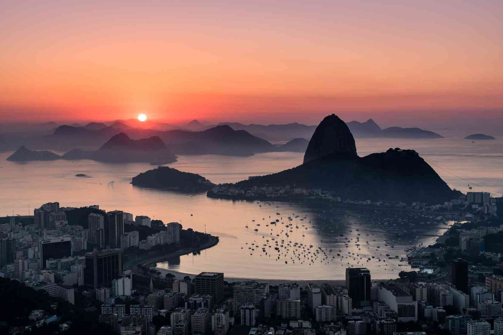
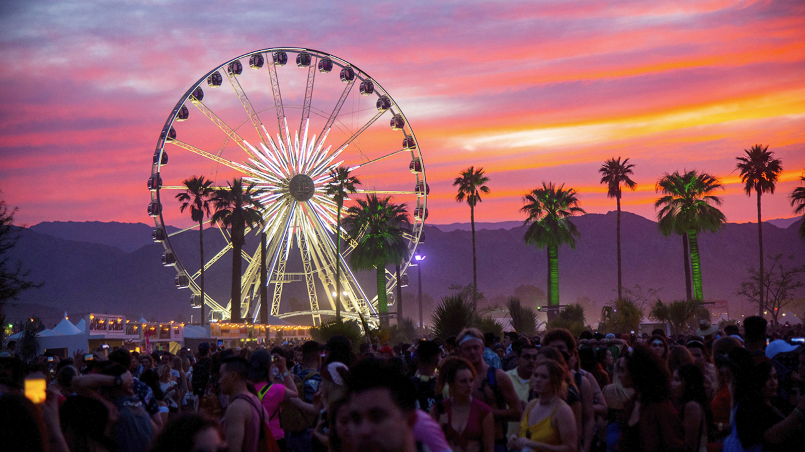

- 
- 
Différents événements culturels que vous pourrez voir

Carnaval de Rio de Janeiro (Brésil):
Le Carnaval de Rio est l'un des événements les plus célèbres et spectaculaires au monde. Il dure plusieurs jours, avec des défilés de samba incroyablement colorés, des costumes élaborés, des performances de danse et de musique. Les écoles de samba rivalisent dans le Sambadrome, offrant un spectacle de rythmes et de danse brésilienne qui attire des millions de visiteurs
Coachella Valley Music and Arts Festival (États-Unis):
Situé à Indio, en Californie, le festival Coachella est l'un des festivals de musique les plus célèbres au monde, attirant une foule internationale. Il est réputé pour sa diversité musicale, allant du rock à la musique électronique en passant par le hip-hop. En plus de la musique, le festival propose une expérience artistique avec des installations et des sculptures géantes, le tout dans un cadre désertique et coloré.

Mardi Gras à La Nouvelle-Orléans (États-Unis):
Le Mardi Gras de La Nouvelle-Orléans est un événement haut en couleur, célèbre pour ses défilés animés, ses costumes extravagants, ses perles lancées par les « krewes » (groupes de participants) et sa musique jazz unique. Ce festival reflète l'héritage créole et la culture cajun de la ville, combinant musique, danse et une atmosphère de fête.